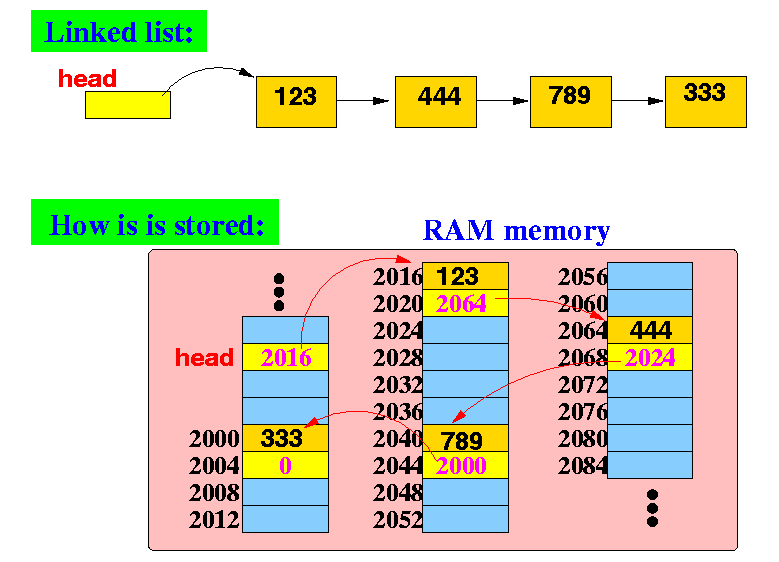
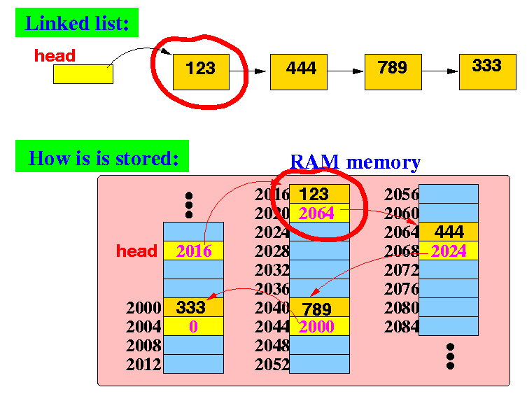
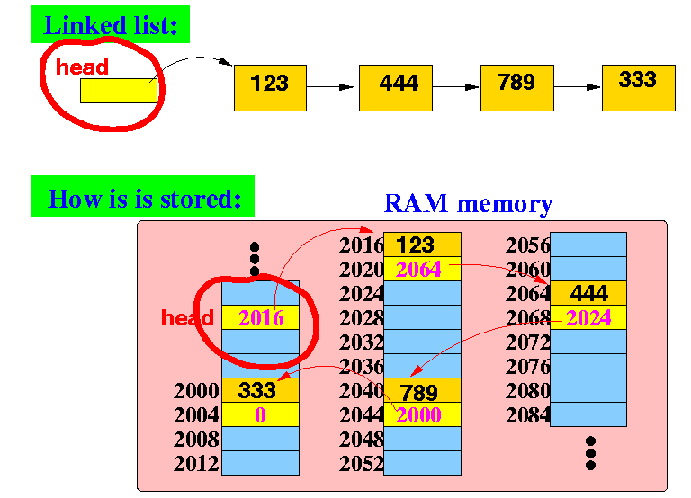

|  |
Note:
|
|
|  |
|
struct ListElem
{
int value; // the integer value stored in the list
struct ListElem *next; // points to the nextlist element
}
|
struct AnyListElem
{
variable definitions; // the "information payload"
struct AnyListElem *next; // points to the nextlist element
}
|
|  |
Observe that:
|
Therefore, the head variable has the following type definition:
struct ListElem *head; // The head variable of a linked list
|
struct AnyListElem *head; // General case.... |